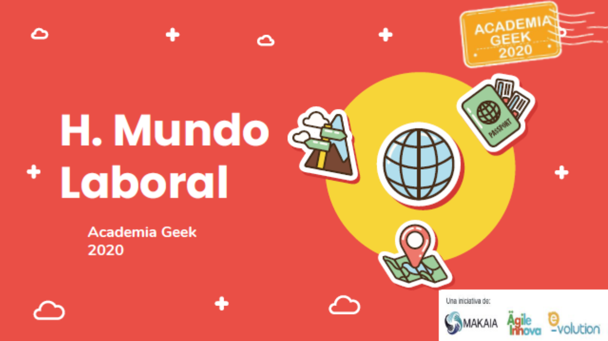
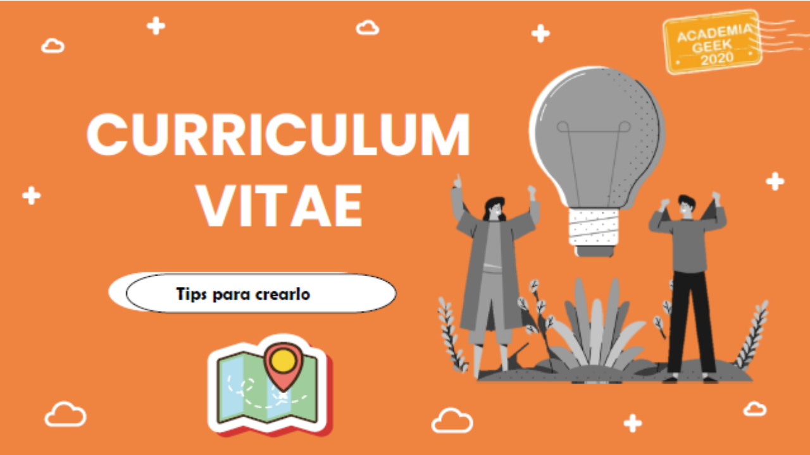
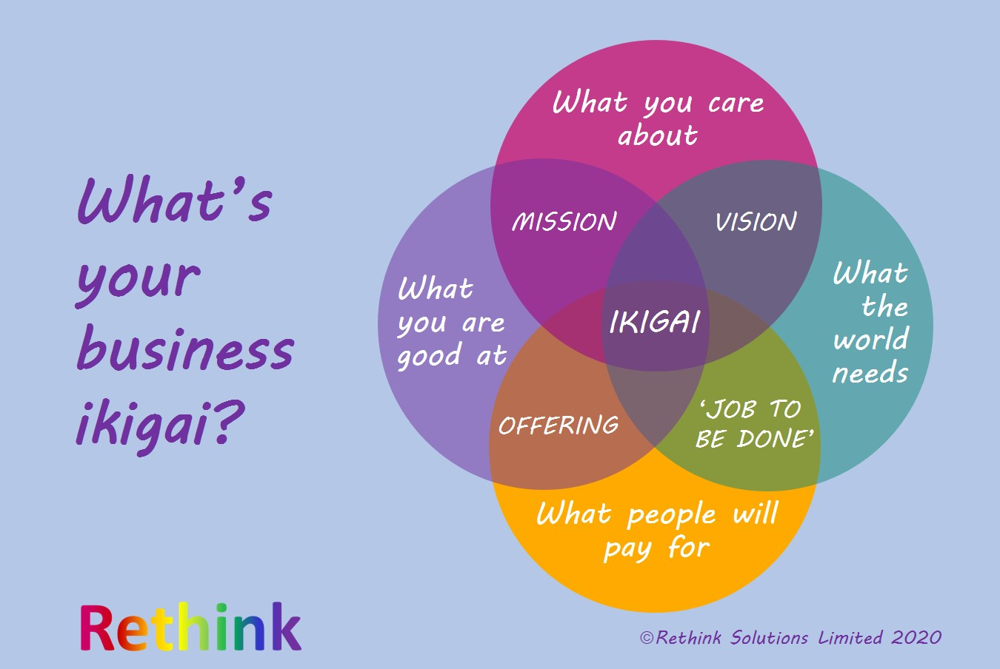
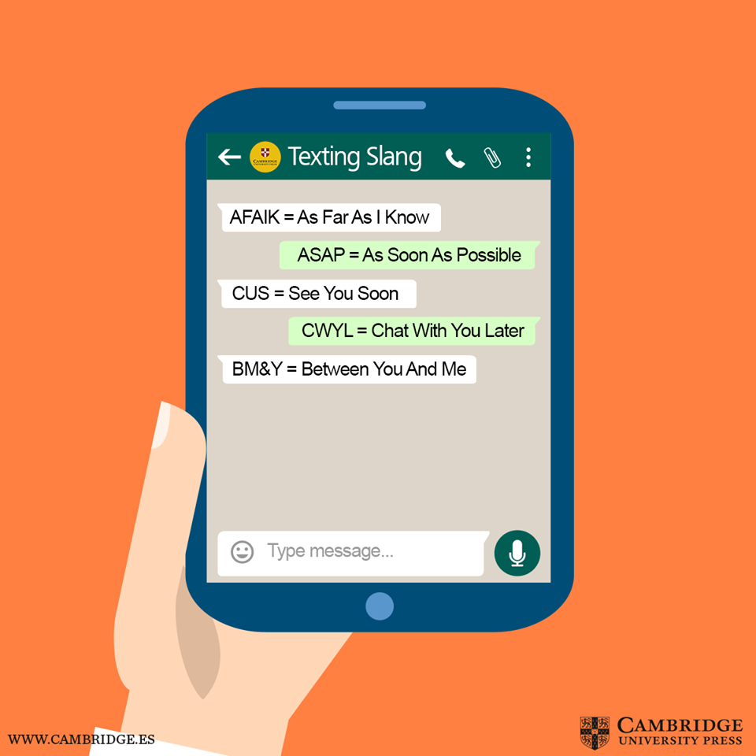
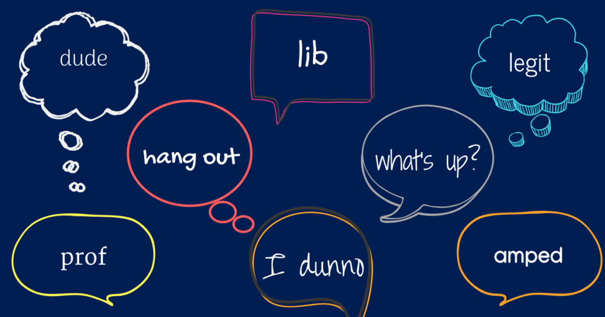

Accede a información y conocimiento frente a las habilidades y estrategias para un desempeño efectivo en el universo de la programación digital.
Tips de empleabilidad, inglés organizacional y comptencias para el siglo 21 de cara al futuro.
Te damos la bienvenida al multiverso de nuevos talentos digitales, en el que expermentarás un proceso de acoplamiento al contexto actual denominado la 4° revolución industrial, caractirizada por las tendencias TI y por las demandas de perfiles geek que se requieren en las empresas digitales del país y a nivel internacional. Haz click en leer más y entérate en que consiste el talento degital del siglo 21 .

Sabes cómo diseñar tu curriculum Vitae para generar una buena imágen de presentación? Aquí podrás encontrar los tips, qué es y para qué sirve la hoja de vida, que tipo de infrmación compartir, formato y contenido, claves a tener presente y mucho más. Haz click en leer más y entérate acerca de los lineamientos para una hoja de vida profesional y con estilo .

De acuerdo a la cultura japonesa, cada ser humano, cada individuo en el planeta tierra tiene un "ikigai", esto es "una razón de vivir", "una razón de ser". Encontrarlo requiere de una búsqueda en uno mismo, profunda y a menudo prolongada. Esta búsqueda es considerada de mucha importancia, ya que se cree que el descubrimiento del propio ikigai trae satisfacción y sentido de la vida. Haz click en leer más y entérate a que se refiere ikigai, de que se compone y como aplicarlo y te conviertas en un talento integral del siglo 21 .

Para un mejor rendimiento y superar el etres, ansiedad, frustración, y mantener tu atención activa en tus actividdes laborales y cotidianas, alica el mindfulness. Un método que te ayudará a desarrollar todo tu potencial y te mantendrá en un nivel de máxima productividad. Haz click en leer más y entérate a que se refiere el minfulness, de que se compone y como aplicarlo y logres el control de tus acciones de cara al siglo 21 .

En un mundo interconectado, el aprendizaje del inglés se ha convertido en el medio principal del proceso de universalización del conocimiento, además de acceder a información de primera mano de otras culturas y brindar la oportunidad de adquirir una formación integral que favorezca la preparación del futuro profesional, quien podrá desempeñarse en diferentes campos con habilidades que satisfagan las necesidades del entorno. Haz click en leer más desarrollas tus habilidades en inglés + TIC y encuentra nuevas oportunidades .

A veces, los estudiantes de inglés, a pesar de llevar años preparándose y tener una cierta soltura, se sienten inseguros a la hora de usarlo en el trabajo. Es normal, los negocios son cosa seria y cometer una equivocación puede tener consecuencias. Pero no debes tener miedo. Al fin y al cabo, si llevas un tiempo estudiando inglés seguramente ya tengas las herramientas para comunicarte a nivel profesional. Haz click en leer más. Para dominar el inglés comercial, tan solo debes desarrollar algunas habilidades.
